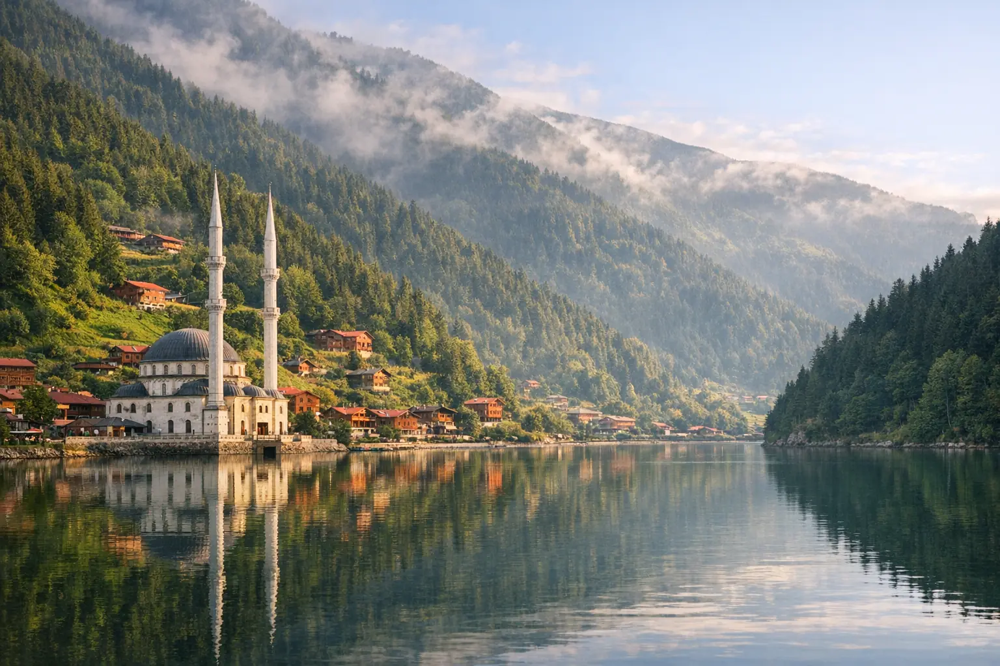
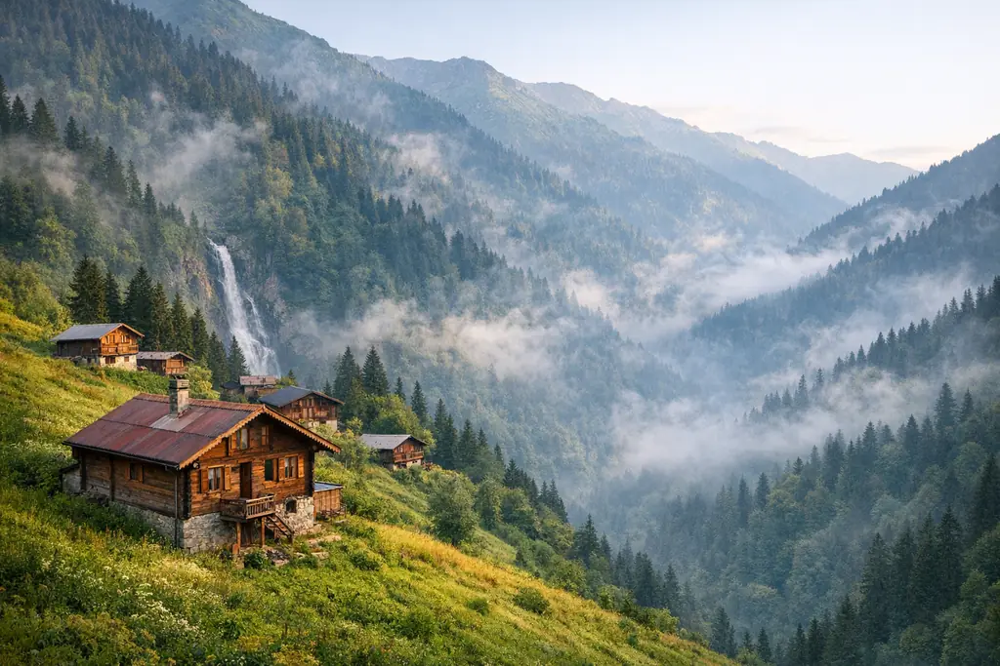
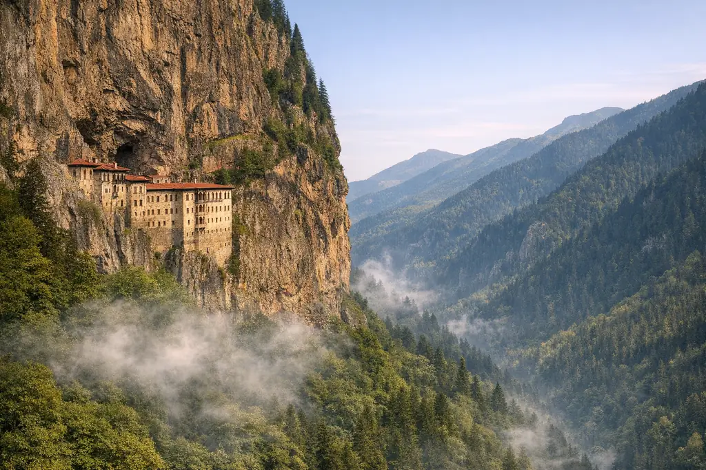

برنامج طرابزون وأوزنجول 7 أيام
أسبوع في الشمال التركي: ليلتان على بحيرة أوزنجول، وليلة في أيدر وسط الجبال، ودير سوميلا ومدينة طرابزون، مع سائق يتحدث العربية.
السعرحسب الموسم — اطلب عرضك

دليل الوجهة • Uzungöl
السياحة في أوزنجول (وتُكتب أيضاً اوزنجول أو أوزونغول) هي الحلم الأخضر لكثير من الزوار العرب: بحيرة هادئة بين جبال مكسوّة بالغابات، وأكواخ خشبية، وهواء منعش في عزّ الصيف.
لماذا أوزنجول؟
أوزنجول بلدة جبلية صغيرة تتبع منطقة تشايكارا في ولاية طرابزون، وتقع على ارتفاع يزيد قليلاً على 1000 متر، على بُعد حوالي 100 كم من مدينة طرابزون. اسمها بالتركية يعني «البحيرة الطويلة»، وقد تشكّلت البحيرة حين سدّت انهيارات صخرية مجرى النهر الجبلي، فصارت اليوم أشهر صورة للشمال التركي. ويصلها الزوار عبر الطريق الساحلي حتى بلدة أوف، ثم طريق جبلي يصعد مع النهر بين الغابات والقرى الخشبية.
حول البحيرة ممشى سهل للعائلات، ومسجد على الضفة صار رمزاً للمكان، ومطاعم تقدّم سمك السلمون المرقط من الجداول المجاورة. ومن البلدة تصعد الطرق إلى هضاب أعلى مثل هضبة سلطان مراد وإطلالة دميركابي، حيث المراعي المفتوحة والمشاهد فوق الغيوم. وتطل الفنادق والأكواخ من السفوح على الماء، فتبدو البلدة في الصور كأنها لوحة من بطاقة بريدية.
تزدحم أوزنجول في الصيف، إذ تستقبل ملايين الزوار سنوياً بحسب ما تنشره الصحافة التركية، وكثير منهم من دول الخليج، ويصبح المساء على البحيرة بأضوائه جزءاً من المتعة. أما في الشتاء فتكسوها الثلوج وتتحول إلى مشهد أبيض هادئ يناسب من يبحث عن تجربة مختلفة. وفي أواخر الربيع وبداية الخريف تكون البحيرة أهدأ وألوان الغابات أجمل، وهي فترة مثالية للأزواج ومحبي التصوير.
يمكنك زيارة أوزنجول في رحلة يوم من طرابزون، لكننا ننصح بالمبيت ليلة أو ليلتين لتعيش هدوء الصباح الباكر قبل وصول زوار اليوم الواحد. ونضمّها عادةً إلى برنامج طرابزون وأوزنجول 7 أيام مع سائق يتحدث العربية وفندق أو كوخ بإطلالة على البحيرة، أو إلى جولة البحر الأسود 10 أيام التي تضيف أيدر وريزه ودير سوميلا. ونحرص على ترتيب يومك بحيث تصل إلى البحيرة صباحاً قبل الزحام، وتخصّص وقتاً للهضاب القريبة والمشي حول الماء دون استعجال.

أبرز المعالم
قائمة مختارة بعناية لما يستحق وقتك في أوزنجول، مع ترتيب ذكي للزيارات ضمن برامجنا.
ممشى مستوٍ يدور حول البحيرة تقطعه في أقل من ساعة، مع جسور خشبية صغيرة ومقاعد للاستراحة. أجمل أوقاته الصباح الباكر حين ينعكس الضباب على الماء.
المسجد القائم على ضفة البحيرة هو أشهر لقطة في المكان؛ صلِّ فيه ثم التقط الصور من الضفة المقابلة حيث تنعكس صورته على الماء.
هضبة واسعة بمراعٍ مفتوحة وهواء نقي على بُعد حوالي 35 كم فوق أوزنجول، والطريق إليها مرتفع ويُفضّل فيه سائق معتاد على الطرق الجبلية.
طريق صاعد فوق البلدة يمنحك مشهداً كاملاً للبحيرة والوادي من الأعلى، ويقود إلى مراعٍ صيفية وأكواخ رعاة تقليدية.
شلال جميل على الطريق بين الساحل وأوزنجول، يتوقف عنده معظم الزوار لالتقاط الصور وشرب الشاي.
يُربّى السمك في مياه الجداول الباردة ويُقدَّم مشوياً أو مقلياً في مطاعم على ضفة النهر والبحيرة، مع خبز الذرة والأطباق الريفية.
على طريق أوزنجول تتوقف الجولات عند مصانع الشاي ومحلات العسل الجبلي، ومحلات سكاكين سورمنه المصنوعة يدوياً، وهي هدايا مميزة من الشمال.
تتوفر حول البلدة أنشطة موسمية مثل ركوب الخيل والزيبلاين والمشي في المسارات الجبلية، وتختلف حسب الطقس والموسم.
بيوت وأكواخ خشبية متدرّجة على السفوح بشرفات تطل على البحيرة، وهي جزء أساسي من تجربة المبيت هنا.
مع حلول الشتاء تغطي الثلوج الأسطح والغابات، وتصبح البحيرة لوحة بيضاء هادئة. تحتاج الطرق حينها إلى سائق معتاد على القيادة في الثلج.
برامج جاهزة
برامج يوماً بيوم يمكن تعديلها بالكامل حسب عدد أيامك وميزانيتك.
أسبوع في الشمال التركي: ليلتان على بحيرة أوزنجول، وليلة في أيدر وسط الجبال، ودير سوميلا ومدينة طرابزون، مع سائق يتحدث العربية.

عشرة أيام بين ساحل البحر الأسود وهضابه: طرابزون، أوزنجول، سلطان مراد، أيدر وريزه، دير سوميلا وكهف كاراجا، بإيقاع مريح.

يجمع أكثر وجهتين يقصدهما الزوار العرب في تركيا: معالم إسطنبول والبوسفور، ثم طرابزون وبحيرة أوزنجول وأيدر ودير سوميلا، مع الطيران الداخلي.
جولات يومية
أين تقيم؟
فنادق أوزنجول: المناطق والخيارات
ونرتّب لك أيضاً الاستقبال من المطار وسائقاً خاصاً يتحدث العربية.
نصائح أويا
صمّم رحلتك
املأ النموذج وسيصلك برنامج مقترح مع خيارات الفنادق والتنقلات عبر واتساب.
أسئلة وأجوبة
تقع في منطقة تشايكارا التابعة لولاية طرابزون شمال شرق تركيا، وتبعد حوالي 100 كم عن مدينة طرابزون ومطارها، أي نحو ساعتين بالسيارة حسب التوقفات.
رحلة اليوم تكفي لرؤية البحيرة، لكن المبيت ليلة أو ليلتين يمنحك الصباح الهادئ والمساء الجميل وزيارة الهضاب القريبة دون استعجال. ننصح بالمبيت لمحبي الطبيعة والهدوء.
من مايو إلى سبتمبر للخضرة والطقس المعتدل، ويوليو وأغسطس الأكثر ازدحاماً. أما سبتمبر وأوائل أكتوبر فيمنحانك ألوان الخريف وزحاماً أقل.
نعم، الثلج معتاد في أشهر الشتاء خصوصاً من ديسمبر إلى فبراير، وتختلف كمياته من سنة لأخرى. تبقى البلدة مفتوحة عادة، لكننا نتابع حالة الطرق قبل كل رحلة.
للعائلات مع أطفال صغار أو كبار السن ننصح بفندق قريب من البحيرة لسهولة المشي، وللعائلات الكبيرة فيلا أو كوخ واسع بعدة غرف. أخبرنا بعددكم وميزانيتك ونقترح خيارات متاحة فعلاً في تواريخك.
في ذروة الصيف تزدحم البحيرة خلال النهار. زرها صباحاً باكراً أو بعد العصر، واختر المبيت لتستمتع بها بعد مغادرة زوار اليوم الواحد.
من دليل أويا

دليل عملي للشمال التركي: كيف تصل إلى طرابزون، ومتى تزور أوزنجول، وأين تسكن، وما أجمل الأماكن من أيدر إلى سوميلا، مع برنامج 7 أيام مجرب.

برنامج عائلي متوازن لعشرة أيام في تركيا يجمع المدينة والطبيعة والثلج أو البحيرات، مع أفكار لأنشطة الأطفال ونصائح عملية للسكن والتنقل مع الصغار.

تركيا بلد بمناخات متعددة، فما يناسب إسطنبول قد لا يناسب أنطاليا أو أوزنجول في الشهر نفسه. دليل شهر بشهر يساعدك على اختيار التوقيت والوجهة معاً.
اكتشف المزيد

مدينة القارتين وسحر البوسفور

بوابة الشمال التركي الأخضر

العاصمة العثمانية الأولى وجبل الثلج

بحيرة وغابات على بُعد ساعتين

شمس وبحر وجبال على المتوسط

مناطيد الشروق فوق المداخن الخرافية

خلجان إيجة ومراسي اليخوت
خدمة شخصية من البداية للنهاية
أخبرنا بوجهتك وتواريخك وعدد المسافرين، ويصلك عرض مفصّل خلال وقت قصير — بدون أي التزام.